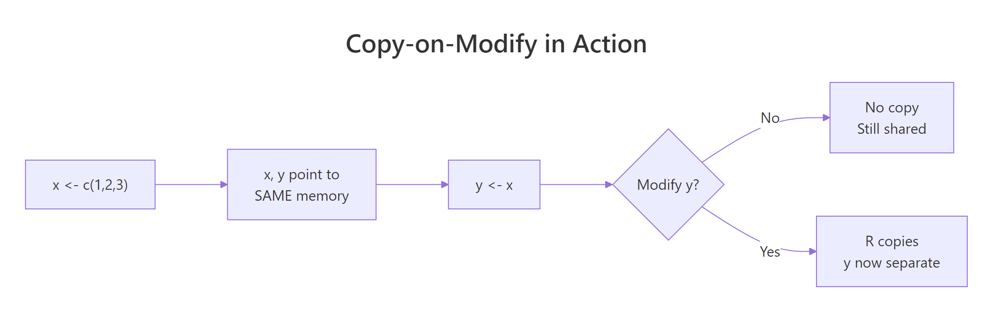

Why R Copies Your Data (And How Copy-on-Modify Actually Saves Memory)
R uses copy-on-modify semantics: when you write y <- x, R doesn't duplicate the data. Both names point to the same memory. R only makes an actual copy the moment one of them is modified, and sometimes not even then. This is why R can handle large objects without doubling memory on every assignment.
What actually happens when you write y <- x?
Nothing. R binds the name y to the same memory that x already points to, no data is copied. You can prove it with lobstr::obj_addr(), which returns the memory address an R object lives at.
Same address. x and y are two names pointing to one vector. Assigning y <- x was free, it didn't allocate, didn't copy, didn't touch your RAM. That's why even a 1GB data frame costs nothing to "pass around" in R as long as you're not modifying it.

Figure 1: Assignment in R is a pointer operation. A copy only happens at the exact moment one binding tries to change the shared value.
When does R actually make a copy?
The moment you modify one of the shared bindings. At that instant, R says "these two names can't share memory anymore" and duplicates the data so each has its own. You can watch it happen with tracemem().
Two different addresses now. x is untouched (still at the original address); y got its own fresh copy with the modified value. This is "copy-on-modify" in action, R defers the expensive work until there's no choice.
Why doesn't R copy function arguments?
Same reason, copy-on-modify. When you call f(big_df), R doesn't duplicate big_df. The argument big_df inside the function is just another name bound to the same memory. Only if the function modifies its argument does R make a copy.
The function received big as its argument x, both names pointing at the same million-element vector. No copy, obj_addr(x) inside the function returns the same address as obj_addr(big) outside it.
The moment x[1] <- 99 runs, R makes x its own copy inside the function. The outer big is untouched, modifying a function argument never leaks back to the caller. This is R's version of "pass by value" without the cost of actually passing by value.
When does R copy unnecessarily (and how do you avoid it)?
R's copy detection isn't perfect. In older R versions, certain operations would trigger copies even when nothing was really shared. Modern R (4.0+) is much smarter, but a few patterns still cost more than they should.
Every c(result, i^2) creates a new longer vector. Even if R is clever about some of these, the pattern fights copy-on-modify's assumptions. Pre-allocating fixes it completely:
Same outcome, dramatically less memory churn. The rule: if you know the final size, allocate it up front.
lobstr::obj_size() and lobstr::mem_used() to measure actual memory consumption. They account for sharing, obj_size(x, y) on two shared vectors is the size of one, not two.Three calls, three identical numbers. x and y share memory, so their combined footprint is the footprint of one vector. That's the payoff of the whole copy-on-modify model.
Does this apply to lists and data frames too?
Yes, and it gets more interesting. Lists and data frames are containers, they hold references to their elements. When you modify one element, R has to decide whether to copy just that element or the whole container.
lobstr::ref() prints a tree showing which objects share memory. When you run the above on recent R versions, you'll see both data frames sharing the same underlying column vectors. Now modify a column in df2:
Only the changed column is duplicated. The unchanged column b still shares memory between df1 and df2. This is why a 10-column data frame where you modify one column costs roughly 10% more memory, not 100%.
dplyr::mutate() and similar operations are so much cheaper than they used to be.Practice Exercises
Exercise 1: Watch a copy happen
Use lobstr::obj_addr() and tracemem() to observe when R actually copies a vector.
Show solution
Exercise 2: No copy, no cost
Write a function peek(x) that prints the length of x and returns x unchanged. Prove with obj_addr() that no copy happens when you pass a large vector to peek.
Show solution
Summary
| Action | Causes a copy? |
|---|---|
y <- x |
No, both names share memory |
f(x) (function call) |
No, argument shares memory |
y[1] <- 99 |
Yes, y gets its own copy |
| Modify a column in shared data frame | Only that column is copied |
| Pre-allocate then fill | No per-iteration copy |
Grow a vector with c() in a loop |
Repeated copies, slow |
Three things to remember:
- Assignment is free.
y <- xis a pointer operation, not a data duplication. - Copies happen at the point of modification, not before. Functions that only read data pay no copy cost.
- Measure, don't guess.
lobstr::obj_addr(),tracemem(), andobj_size()show you exactly what R is doing, no need to theorise.
References
- Wickham, H. Advanced R, 2nd ed., Chapter 2: Names and values.
lobstrpackage, inspecting R's internals.- R Documentation:
?tracemem,?obj_addr. Run in any R session. - R Internals manual, Memory allocation.
Continue Learning
- R Data Frames, the main data structure where copy-on-modify matters most in practice.
- Write Better R Functions, understand why you can pass big objects to functions without memory penalty.
- R Vectors, the building blocks that copy-on-modify operates on.